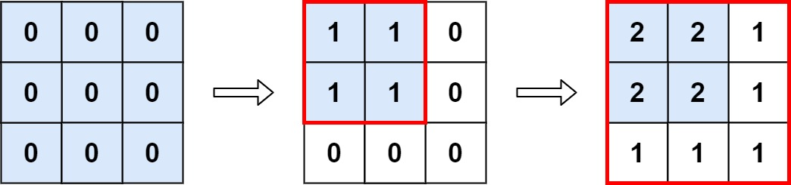

598. 区间加法 II
所有操作都盖住 (0,0)，被每个操作都覆盖的格子是 min(a)×min(b) 的矩形，直接相乘。
思路
- 每次操作
[a,b]把左上角a×b的矩形 +1，所以值最大的格子一定在被所有操作覆盖的交集里。 - 交集仍是一个左上角矩形：行数 = 所有
a的最小值，列数 = 所有b的最小值。 - 答案 =
min(a) × min(b)；ops为空时一个格子都没加过，答案 = 整个矩阵m × n。
图解
最优解
1class Solution {2 public int maxCount(int m, int n, int[][] ops) {3 // 每次操作都盖住左上角 (0,0)；被所有操作都盖住的格子是 min(a) × min(b) 的矩形4 int ra = m, rb = n;5 for (int[] op : ops) {6 ra = Math.min(ra, op[0]); // 行数取所有操作 a 的最小值7 rb = Math.min(rb, op[1]); // 列数取所有操作 b 的最小值8 }9 return ra * rb;10 }11}题目
给你一个 m x n 的矩阵 M和一个操作数组 op 。矩阵初始化时所有的单元格都为 0 。ops[i] = [ai, bi] 意味着当所有的 0 <= x < ai 和 0 <= y < bi 时， M[x][y] 应该加 1。
在 执行完所有操作后 ，计算并返回 矩阵中最大整数的个数 。
示例 1:

输入: m = 3, n = 3，ops = [[2,2],[3,3]] 输出: 4 解释: M 中最大的整数是 2, 而且 M 中有4个值为2的元素。因此返回 4。
示例 2:
输入: m = 3, n = 3, ops = [[2,2],[3,3],[3,3],[3,3],[2,2],[3,3],[3,3],[3,3],[2,2],[3,3],[3,3],[3,3]] 输出: 4
示例 3:
输入: m = 3, n = 3, ops = [] 输出: 9
提示:
1 <= m, n <= 4 * 1040 <= ops.length <= 104ops[i].length == 21 <= ai <= m1 <= bi <= n
题面取自力扣当前版本。
数据快照 2026-11-04。题面版权归力扣所有，本站点仅供本人学习使用，请勿对外发布。